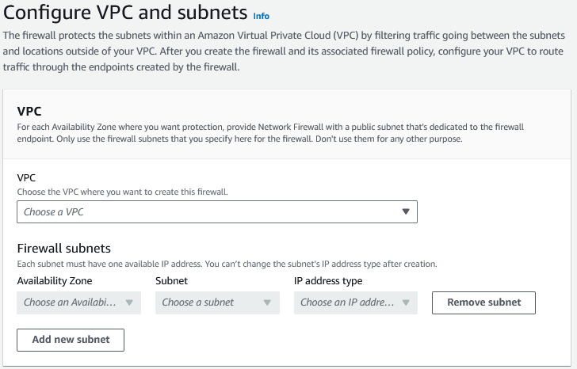
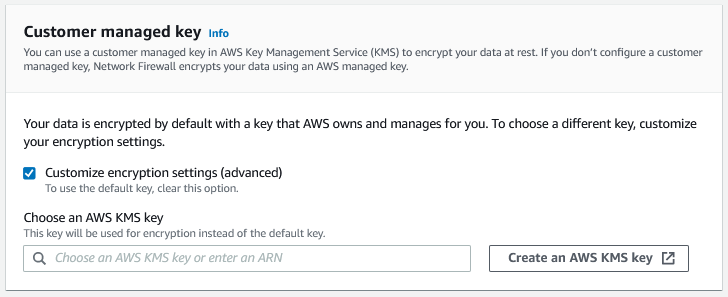
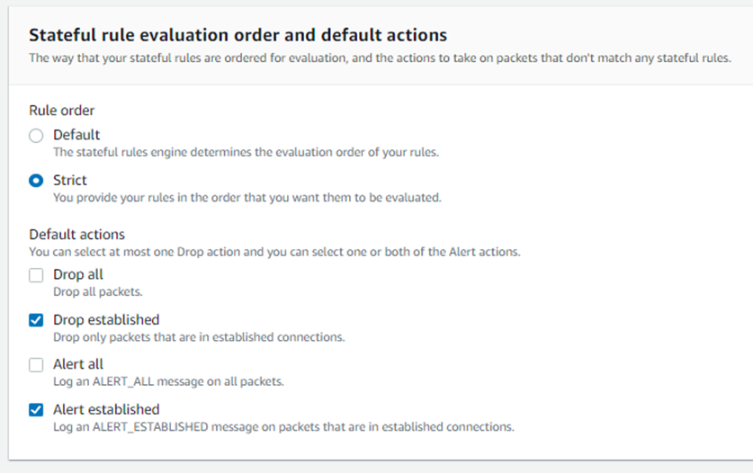
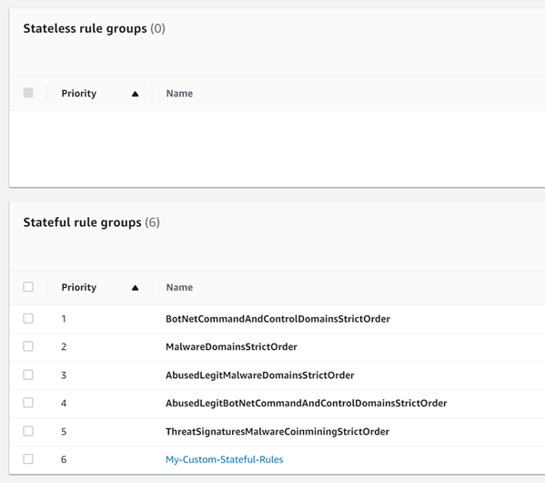
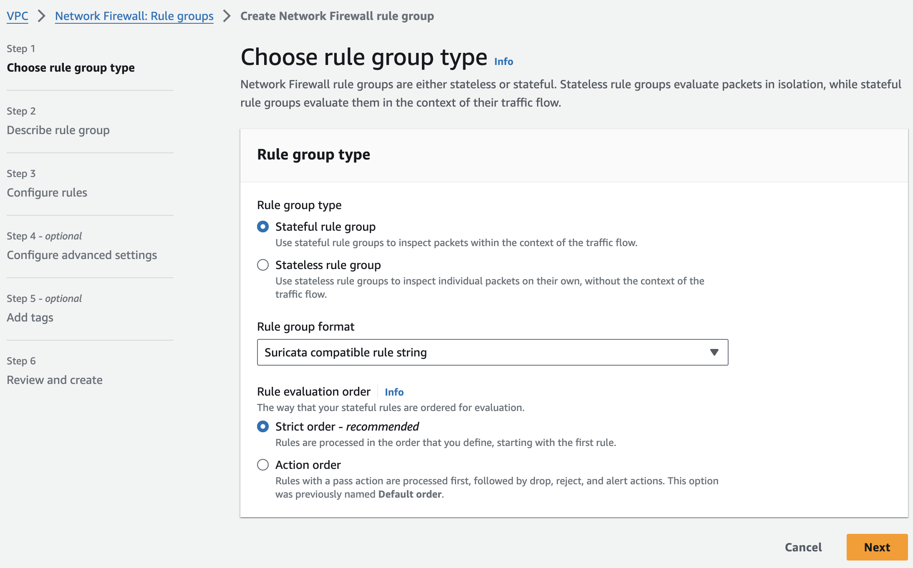
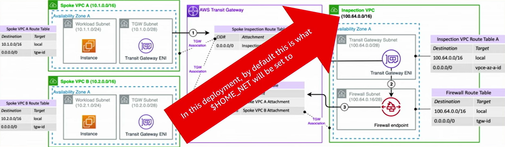
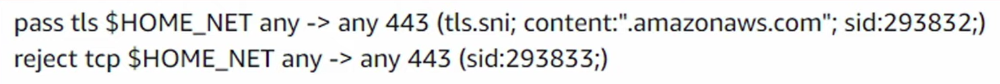
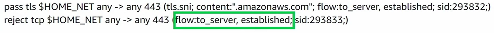

AWS Network Firewall
Introduction
Welcome to the AWS Network Firewall Best Practices Guide. The purpose of this guide is to provide prescriptive guidance for AWS Network Firewall for efficiently protecting your VPCs and their workloads. Publishing this guidance via GitHub will allow for quick iterations to enable timely recommendations that include service enhancements, as well as the feedback of the user community. This guide is designed to provide value whether you are deploying Network Firewall for the first time in a single account, or looking for ways to optimize Network Firewall in an existing multi-account and/or multi-VPC deployment.
How to use this guide
This guide is geared towards security practitioners who are responsible for monitoring and remediation of security events, malicious activity and vulnerabilities within AWS accounts (and resources). The best practices are organized into different categories for easier consumption. Each category includes a set of corresponding best practices that begin with a brief overview, followed by detailed steps for implementing the guidance. The topics do not need to be read in a particular order.
- Getting Started
- Deployment Considerations
- Implementation
- Operationalizing
- Ensure Symmetric Routing
- Use “Strict rule ordering with Alert Established and Drop Established” Default actions
- Use Stateful rules over Stateless rules
- Use Custom Suricata rules instead of UI generated rules
- Use as few Custom Rule Groups as possible
- Ensure the $HOME_NET variable is set correctly
- Use Alert rule before Pass rule to log allowed traffic
- Use “flow:to_server” keyword in stateful rules
- How to make sure your new Stateful firewall rules apply to existing flows
- Set up logging and monitoring
- Cost Considerations
- Resources
What is AWS Network Firewall?
AWS Network Firewall is a managed service that makes it easy to deploy essential network protections for all of your Amazon Virtual Private Clouds (VPCs). It can filter traffic at the perimeter of your VPC, including filtering traffic going to and coming from an internet gateway, NAT gateway, over VPN, or AWS Direct Connect.
What are the benefits of enabling AWS Network Firewall?
AWS Network Firewall has a highly flexible rule engine so you can build custom firewall rules to protect your unique workloads. It supports thousands of rules, and the rules can be based on port, protocol, and FQDN/domain. AWS Network Firewall supports rules written in Suricata format, giving you the ability to create customized rules based on specific network traffic characteristics, such as packet size or byte match pattern. Network Firewall also offers AWS Managed domain lists and threat signatures so you don’t have to worry about writing and maintaining your own Suricata IPS rules.
Getting started
In this section we will cover what you need to consider before activating AWS Network Firewall in your AWS infrastructure.
Deployment Considerations
When customers first start deploying AWS Network Firewall, they might be tempted to start configuring it right away without looking at all its capabilities, for example deploying endpoints to each VPC, only using managed rules or not using Alert rules. We recommend looking into the Network Firewall documentation as this could be a significant time-saver later down the road.
To get started you should understand the three main architecture patterns for Network Firewall deployments and what would be best suite your environment.
- Distributed deployment model — Network Firewall is deployed into each individual VPC.
- Centralized deployment model — Network Firewall is deployed into a centralized VPC attached to an instance of AWS Transit Gateway for East-West (VPC-to-VPC) or North-South (inbound and outbound from internet, on-premises) traffic. We refer to this VPC as the inspection VPC.
- Combined deployment model — Network Firewall is deployed into a centralized inspection VPC for East-West (VPC-to-VPC) and a subset of North-South (on-premises, egress) traffic. Internet ingress is distributed to VPCs that require dedicated inbound access from the internet, and Network Firewall is deployed accordingly.
See the Deployment models for AWS Network Firewall blog post for further details about deployment models.
Implementation
In this section we will cover the minimum requirements for deploying AWS Network Firewall.
To deploy Network Firewall, you just need one VPC, one subnet, but for resiliency we highly recommend a firewall endpoint/subnet be deployed for each AZ that you have workloads in.

Figure 1: Network Firewall VPC Configuration settings
If you want to encrypt the Network Firewall configuration data at rest with your own key, you will need to specify a KMS key.

Figure 2: Network Firewall CMK Configuration
For more information on deployment refer to the getting started with Network Firewall documentation
Operationalizing
Ensure Symmetric Routing
Network Firewall does not support Asymmetric routing so you will need to ensure symmetric routing is configured in your VPC. When you deploy Network Firewall into a VPC, you need to modify the route tables to ensure traffic is sent through firewall endpoints so that it can be inspected. Network Firewall does not support asymmetric routing so the route tables have to account for network flows going to the firewall endpoint in both directions.
When using AWS Transit Gateway (TGW) in a centralized deployment configuration and using Network Firewall to inspect East-West traffic between VPCs, the TGW’s appliance mode option needs to be enabled for the attachments in the Inspection VPC. The appliance mode can be enabled in the AWS Console, as well as the API.
If appliance mode is not enabled, the return path traffic could land on an endpoint in a different AZ, which will prevent the Network Firewall from correctly evaluating the traffic against the firewall policy.
Use “Strict rule ordering with Alert Established and Drop Established” Default actions
- In Network Firewall there are two options for how the Suricata engine is going to process rules.
- The “Strict” option is recommended because it instructs Suricata to process the rules in the order you have defined.
- The “Action Order” option supports Suricata’s default rule processing which is appropriate for IDS use cases but is not a good fit for typical firewall use cases.
- When selecting Strict rule-ordering you are also able to select a “Default” action, or actions that are run at the end of your rules and will be applied to any traffic not matching earlier rules. The two most often used are:
- “Alert established” is a helpful option to help customers log all traffic flows through the firewall when starting out. For customers looking to build out an allow-list policy, it also helpful to leave in place and log the traffic that would be blocked once they move to “Drop Established” (i.e. what traffic not explicitly allowed by any preceding firewall rules).
- “Drop established” means that you are only allowing the traffic that you explicitly allow via your firewall rules and everything else is denied/dropped. Customers can use this option once they are confident their policy has rules to only allow intended traffic. This rule will not log what is dropped by the rule unless the previous “Alert established” is also checked.

Figure 3: Network Firewall Stateful Rule evaluation
Use Stateful rules over Stateless rules
- Customers should leverage Stateful rules if they want to get the deep packet inspection IPS capabilities of the Network Firewall. Some customers accidentally start with stateless rules only to find out later that they really needed to use stateful rules instead.
- Stateless rules should be used very sparingly
- Stateless rules could be used in the case where you don't want some traffic to be logged or alerted on and simply denied, but for the most part your rule groups should look like this (below) in the AWS Console:

Figure 4: Network Firewall Stateless Rule Groups
- Pros of using Stateful rules
- Return traffic is automatically allowed so there is no need to define both ingress & egress rules for the same flow of traffic
- Deep packet inspection is supported, which gives you a deeper visibility into layer 7 attributes of the traffic
- Supports logging so customers can review the full application level details of traffic, as well as the standard 5-tuple flow information
- These rules are easier to troubleshoot, and they are much more flexible and capable than the stateless rules
- Customers can add a description to the rules, such as its creation date (with change request number), use case or other comments
- The Reject action is supported
- The capacity calculation for these rules is easier to work with
Use Custom Suricata rules instead of UI generated rules
These are configurable under the Stateful rule group options and are a free-form text that you to have full control. They allow you to more easily leverage the full flexibility of Suricata. Here are example Suricata rules that customers have found helpful when getting started.

Figure 5: Network Firewall Stateful Rule Group
We recommend you educate yourself and your team on using custom Suricata rules early in their adoption because often later they will need the power and flexibility of custom Suricata rules to support all their use cases.
The pros of using customer Suricata rules:
- Maximum flexibility
- Control over the alerting and how it shows up in the logs
- Custom rule signature ID can be used which helps troubleshooting and simplifying log analysis
- Free-form text rules are easier to copy, edit, share, and backup.
- Easy to switch rule(s) from one rule group to another (blue-green testing for example)
- Allow for adding the very important keyword: “flow:to_server” to rules easily
Below we have also included a custom template for an egress security use case to show examples of custom suricata rules.
# This is a "Stict rule ordering" egress security template meant for only the egress use case. These rules would need to be adjusted to accomodate any other use cases. Use this ruleset with "Strict" rule ordering firewall policy.
# Silently allow low risk protocols out to anywhere
pass ntp $HOME_NET any -> $EXTERNAL_NET 123 (flow:to_server; msg:"pass rules do not alert/log"; sid:9829158;)
pass icmp $HOME_NET any -> $EXTERNAL_NET any (msg:"pass rules do not alert/log"; sid:20231171;)
# Only allow short list of egress ports, and block all the rest
drop ip $HOME_NET any -> $EXTERNAL_NET ![123,80,443] (msg:"Disallowed Egress Port"; sid:20231671;)
# Block high risk TLDs
reject tls $HOME_NET any -> $EXTERNAL_NET any (tls.sni; content:".ru"; nocase; flow:to_server; sid:20233181;)
reject http $HOME_NET any -> $EXTERNAL_NET any (http.host; content:".ru"; flow:to_server; sid:20235181;)
reject tls $HOME_NET any -> $EXTERNAL_NET any (tls.sni; content:".xyz"; nocase; flow:to_server; sid:20232181;)
reject http $HOME_NET any -> $EXTERNAL_NET any (http.host; content:".xyz"; flow:to_server; sid:20235281;)
reject tls $HOME_NET any -> $EXTERNAL_NET any (tls.sni; content:".info"; nocase; flow:to_server; sid:10233181;)
reject http $HOME_NET any -> $EXTERNAL_NET any (http.host; content:".info"; flow:to_server; sid:10235181;)
reject tls $HOME_NET any -> $EXTERNAL_NET any (tls.sni; content:".onion"; nocase; flow:to_server; sid:23233181;)
reject http $HOME_NET any -> $EXTERNAL_NET any (http.host; content:".onion"; flow:to_server; sid:20335181;)
# Silently (do not log) allow AWS public service endpoints that we have not setup VPC endpoints for yet
# VPC endpoints are highly encouraged. They reduce NFW data processing costs and allow for additional security features like VPC endpoint policies.
pass tls $HOME_NET any -> $EXTERNAL_NET any (tls.sni; content:"ec2messages."; startswith; nocase; content:".amazonaws.com"; endswith; nocase; flow:to_server; sid:20231181;)
pass tls $HOME_NET any -> $EXTERNAL_NET any (tls.sni; content:"ssm."; startswith; nocase; content:".amazonaws.com"; endswith; nocase; flow:to_server; sid:2023116132;)
pass tls $HOME_NET any -> $EXTERNAL_NET any (tls.sni; content:"ssmmessages."; startswith; nocase; content:".amazonaws.com"; endswith; nocase; flow:to_server; sid:2021110133;)
# Allow-list of FQDNs to silently allow
pass tls $HOME_NET any -> $EXTERNAL_NET any (tls.sni; content:"checkip.amazonaws.com"; startswith; nocase; endswith; flow:to_server; sid:202311893;)
pass http $HOME_NET any -> $EXTERNAL_NET any (http.host; content:"checkip.amazonaws.com"; startswith; endswith; flow:to_server; sid:20236893;)
# Allow-List FQDNs, but still alert on them
alert tls $HOME_NET any -> $EXTERNAL_NET any (tls.sni; content:"www.example.com"; startswith; nocase; endswith; flow:to_server; msg:"TLS SNI Allowed"; sid:202315893;)
pass tls $HOME_NET any -> $EXTERNAL_NET any (tls.sni; content:"www.example.com"; startswith; nocase; endswith; flow:to_server; msg:"pass rules do not alert/log"; sid:202315873;)
# Silently allow TCP 3-way handshake to be setup by $HOME_NET clients
pass tcp $HOME_NET any -> $EXTERNAL_NET any (flow:not_established, to_server; msg:"pass rules do not alert/log"; sid:9918156;)
pass tcp $EXTERNAL_NET any -> $HOME_NET any (flow:not_established, to_client; msg:"pass rules do not alert/log"; sid:9918157;)
# Block any egress traffic not already allowed.
reject tcp $HOME_NET any -> $EXTERNAL_NET any (flow:to_server; msg:"Default egress TCP to_server reject (only logs once every 5 minutes)"; threshold: type limit, track by_src, seconds 600, count 1; sid:9822311;)
drop udp $HOME_NET any -> $EXTERNAL_NET any (msg:"Default egress UDP drop (only logs once every 5 minutes)"; threshold: type limit, track by_src, seconds 600, count 1; sid:82319824;)
drop icmp $HOME_NET any -> $EXTERNAL_NET any (msg:"Default egress ICMP drop (only logs once every 5 minutes)"; threshold: type limit, track by_src, seconds 600, count 1; sid:82319825;)
# Blanket block everything else clean up rule
# This rule will work fine with "Drop Established" or "Drop All" but those settings will fill the logs unnecessarily, so you may want to keep those options unchecked
drop ip any any -> any any (msg:"Default block all IP (only logs once every 5 minutes)"; threshold: type limit, track by_src, seconds 600, count 1; sid:98228398;)
Use as few Custom Rule Groups as possible
The reasons for this we have listed below:
- When a custom rule group is created, its capacity needs to be defined and extra headroom needs to be taken into account because capacity cannot be modified after a rule group has been created. Having many rule groups creates additional headaches for managing rule capacity limits. For capacity it is recommended to set your custom rule group capcity to whatever leftover capacity you have after implementing your AWS managed rule groups.
- With several rule groups to manage, understanding how traffic is going to be handled becomes more complex since every rule group needs to be inspected to analyze how it impacts the traffic. Seeing your rules in one view makes it easier to identify if a rule conflicts or overshadows other rules instead of jumping between multiple rule groups to stitch together an understanding of how traffic will be evaluated by the policy.
- Network Firewall supports a maximum combined total of 20 rule groups (Managed and Custom). If you create many custom rule groups you will limit how many AWS Managed Rule Groups can also be added.
- For troubleshooting purposes, you will want to make sure Signature IDs (SIDs) are unique across all rule groups. Within a single rule group Network Firewall will enforce unique SIDs, but not across all rule groups. If you don’t have unique SIDs across all rule groups then it can be more challenging to understand from the logs which rule actually handled the traffic.
Ensure the $HOME_NET variable is set correctly
By default the $HOME_NET variable is set to the CIDR range of the VPC where Network Firewall is deployed.

Figure 6: Network Firewall HOME_NET Variable
However this default behavior might not cover the CIDR ranges of the VPCs you want to protect, like Spoke VPC A and Spoke VPC B in the above example.
You want to make sure that the $HOME_NET CIDR range lines up with all your VPCs that you intend to protect and match traffic against.
This variable can be set at a global firewall policy level or in each rule group. If it’s set at both levels, the rule group setting wins.
The $HOME_NET variable and it’s inverse ($EXTERNAL_NET) are used for matching traffic in AWS managed rules. $EXTERNAL_NET follows $HOME_NET and is always anything outside of $HOME_NET.
When using the managed rules for an east/west use case you will want to decide which VPCs/CIDRs you want to protect and assign only those CIDRs to the $HOME_NET variable. If you assign all VPCs/CIDRs then none of those CIDR ranges will be matched by the $EXTERNAL_NET variable in the managed rules. You can also copy out the rules from the threat signatures and adjust the variables to your liking (even replacing the variables by “any“) if you want them to match any/all CIDRs. The downside of doing this is those rules will be static at that point in time and will not be automatically updated like the AWS managed rules.
Use Alert rule before Pass rule to log allowed traffic
If you have a mandate to log all traffic (denied or allowed), you need to add an alert rule for the same traffic as the pass rule before the pass rule itself in your rule group because Pass rules in Suricata simply allow the traffic and do not log it.
#Log allowed traffic to https://*.amazonaws.com
alert tls $HOME_NET any -> any any (tls.sni; content:".amazonaws.com"; nocase; endswith; msg:"*.amazonaws.com allowed by sid:021420242"; flow:to_server; sid:021420241;)
pass tls $HOME_NET any-> any any (tls.sni; content:".amazonaws.com"; nocase; endswith; msg:"Pass rules don't alert, alert is on sid:021420241"; flow.to_server; sid:021420242;)
You need to use Strict Ordering and the Alert rule needs a higher priority than the Pass rule as demonstrated in the code sample above.
The SID in the alert rule message can refer the SID of the pass rule and vice-versa. It can be helpful to use longer SIDs so that you can quickly search your logs for that SID without the query showing unrealted information that might also contain that identifier.
Use “flow:to_server” keyword in stateful rules
With Suricata, it’s possible to configure conflicting rule sets. When traffic to a destination operates at different layers of the OSI model, traffic we want to allow that is operating at a higher level(for example TLS) might get blocked by a rule that is operating at a lower level. For example TCP:

Figure 7: Network Firewall TCP example
Using “flow:to_server” in the rules will make the rules operate at the same level and evaluate the traffic at the same time so that the pass rule has a chance to inspect the traffic before the reject rule blocks the traffic.

Figure 8: Network Firewall flow:to_server established
See Troubleshooting rules in Network Firewall for more information on troubleshooting firewall rules
How to make sure your new Stateful firewall rules apply to existing flows
Network Firewall leverages the Suricata deep packet inspection engine for all Stateful firewall rules. After a flow has been allowed by a Suricata rule, Suricata places that flow in the state table so that it knows it no longer needs to spend resources running deep packet inspection on that flow. For as long as that flow remains active, any new Stateful firewall rules will not apply to that traffic since a decision was already made on that flow. Sometimes you may want your newly added Stateful firewall rules to apply to all traffic, including already active traffic that has been previously allowed through the firewall. For example, perhaps you began setting up the network firewall and started with an, "allow all traffic" type of rule, but then as you get further along in the deployment and testing of network firewall you may want to narrow down your ruleset, and ensure that even already allowed traffic must be processed by your new rules.
- How to clear the Network Firewall stateful rules state table
- Create a placeholder "Action Order" firewall policy (we'll call this firewall policy "Temp-Action-Order") with a default stateless action of pass (which allows all traffic)
- Associate the new placeholder "Temp-Action-Order" to the firewall
- This will disassociate existing firewall policy (let's call this policy "Existing-Strict-Policy")
- Wait for the firewall status to show "In sync"
- Re-Associate the existing firewall policy "Existing-Strict-Policy"
Now any and all traffic, even if it is traffic that was previously allowed, will be re-evaluated against the latest stateful firewall rules.
Set up logging and monitoring
Network Firewall supports two log types, Alert logs and Flow logs
- Alert logs
- Information from Suricata
- IPS engine
- Layer 7 attributes (like domains)
- Protocol detection
- Flow logs
- 5=tuple information that flows across the firewall
- Include the volume of traffic
- Helps identify the top producers and consumers of data
-
It is very helpful to have a CloudWatch Dashboard created with CloudWatch Contributor insights that pulls from both types of logs, AWS support (Todd Pula) provides a sample dashboard with a cloudformation template. For example, you may want to see top domains allowed (alert logs) alongside top IPs sending data (Flow logs) so that you can hover over any data point in the dashboard and see what the corresponding information is across both data sources:
-
Alert logs
- Top protocols used
- Top domains allowed/blocked
- Top ports allowed/blocked
- Top source IPs (workloads) in the VPC being allowed/blocked
- Flow logs
- Destination IPs with most used bandwidth
- Source IPs with most used bandwidth
- Port/protocol with most used bandwidth
Cost considerations
Because each Network Firewall endpoint has hourly charges even if it’s not used, reduce the number of endpoints by leveraging a centralized inspection design and Transit Gateway (TGW).
Do not send traffic to Network Firewall that does not need to be inspected. To avoid these unnecessary processing charges on Network Firewall, use TGW route tables to segment your network, for example keeping VPC Prod from talking to VPC Dev if these VPCs don’t need to communicate.
Use the free VPC endpoints for S3 and DynamoDB instead of sending that traffic through Network Firewall.
Leverage PrivateLink endpoints provided by 3rd party services that do not need to be inspected by the firewall.
Ensure route tables are sending traffic to the local Network Firewall endpoint and not to another AZ’s endpoint. This design will avoid incurring cross-AZ data transfer charges.
Use DNS Firewall to keep traffic off of Network Firewall. Basic blocks can be configured at the DNS layer for traffic that would otherwise reach Network Firewall, effectively blocking traffic “closest to the packet source”.
Use Suricata thresholding to limit log entries and logging costs. For example, the below rule will only log once every 5 minutes.
reject tcp $HOME_NET any -> $EXTERNAL_NET any (flow:to_server; msg:"Default egress TCP to_server reject"; threshold: type limit, track by_src, seconds 600, count 1; sid:9822311;)
Resources
Workshops
Videos
- Introduction, Best Practices and Custom Suricata Rules
- AWS Network Firewall console experience
- Decrypt, inspect, and re-encrypt TLS egress traffic at scale
- Decrypt, inspect, and re-encrypt TLS traffic at scale
- AWS Network Fireall Suricata HOME_NET variable override
- AWS Network Firewall support for reject action for TCP traffic
- AWS Network Firewall tag-based resource groups
- AWS re:Inforce 2023 - Firewalls, and where to put them (NIS306)
Blogs
- Deployment models
- Cost considerations and common options for AWS Network Firewall log management
- TLS inspection configuration for encrypted traffic and AWS Network Firewall
- How to control non-HTTP and non-HTTPS traffic to a DNS domain with AWS Network Firewall and AWS Lambda
- Use AWS Network Firewall to filter outbound HTTPS traffic from applications hosted on Amazon EKS and collect hostnames provided by SNI
- How to deploy AWS Network Firewall by using AWS Firewall Manager
- Introducing Prefix Lists in AWS Network Firewall Stateful Rule Groups
- How to analyze AWS Network Firewall logs using Amazon OpenSearch Service – Part 1
- How to analyze AWS Network Firewall logs using Amazon OpenSearch Service – Part 2